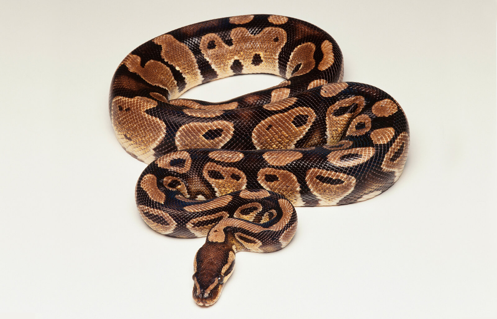

Brown Python
The super power of brown python is spreading the poison easily in it's and Pythons can't move very fast though—only about 1 mile per hour (1.6 kilometers per hour) on open ground. But since they don't
have to chase their food, they don't really need to move quickly.
-
Liar of Nemesis:
These are mostly located in Amazon Forest located in Asian Continent.
-
Enter the midst region of northeast part of Amazon Forest.
-
Take precautions before you enter forest and take necessary equipments to catch Brown python.
-
Most of Phythons are located on tree branches.
index
